Abychom si dokázali lépe představit, jak bude náš dům vypadat, napadlo mě vytisknout si zjednodušený model na 3D tiskárně. V práci máme Průšu, tak jsem využil příležitosti a pustil se do toho. Ve SketchUp jsem prvně vytvořil jednoduchý model domu podle studie. Zabralo mi to asi 3 večery. Chtěl jsem, aby šel výsledný model rozkládat, aby bylo možné prohlédnout si vnitřní dispozice obou podlaží. Model domu má celkem 6 dílů: 1. NP, 2. NP, střecha, lodžie, sklad a přístřešek. Každý díl se tiskl samostatně. Podlaží a střecha drží pohromadě pomocí špejlí umístěných v rozích, kde jsou připraveny 3 mm otvory. Nejsložitější bylo vymyslet uchycení lodžie. Vymyslel jsem to tak, že se zavěsí na konec špejle. Dílky jsou tedy na špejlích připevněné zdola v tomto pořadí: 1. NP, 2. NP, střecha, lodžie. Přístřešek a sklad, stojící volně vedle domu, jsem slepil vteřinovým lepidlem. Tisk celého domu trval v součtu cca 32 hodin (v normální kvalitě). Např. 1. NP trvalo 10 hodin. Vytisknutý model je v měřítku 1:100 a je z materiálu PLA (polylactide).
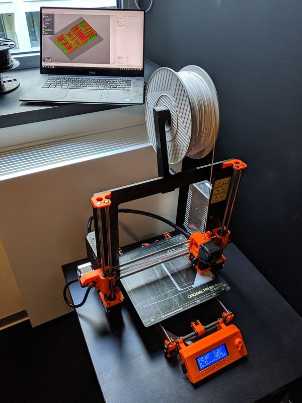
Byla to moje první zkušenost s 3D tiskárnou. Trochu jsem se obával, že to bude komplikované, ale nakonec to byla celkem hračka. Připravený 3D model se jen nahraje do tzv. Sliceru, který vytvoří jednotlivé vrstvy a pro tiskárnu připraví instrukce, jak objekt vytisknout. Byl jsem překvapen kvalitou tisku a přesností. Dům jsem nakonec vytiskl dvakrát. Jednu kopii jsme dali architektům a druhou máme vystavenou doma na poličce.
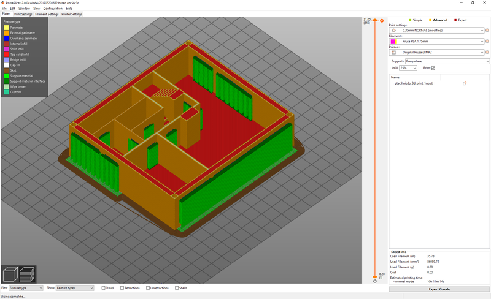
Možná vás napadne otázka, jak se na 3D tiskárně vytisknou překlady oken - tiskárna přeci nemůže tisknout “ve vzduchu”. K tomu slouží tzv. supporty, což je takové “lešení”, které podepře všechny vodorovné příčky. Supporty jsou velmi tenké, takže je lze potom snadno vylámat. Když jsem tisknul 2. NP, model se zespodu trochu zkroutil (tzv. warping). Je to poměrně častý problém, který vzniká kvůli velkým rozdílům teplot. Důležité je, aby objekt dobře přilnul k podložce, a proto je potřeba ji důkladně vyčistit. Kroucení může také zabránit brim, což je tenký zakulacený okraj okolo první vrstvy.
Vytisknuté objekty je ještě potřeba opracovat. Musí se vylámat supporty, odstranit brim, slepit díly a zapravit některé části pilníkem. Vylámání některých supportů bylo pracné. Např. “lešení” v dolní koupelně bylo těžce přístupné. Později jsem také zjistil, že jsem udělal chybu při modelování přístřešku - je moc dlouhý. Během tvorby projektové dokumentace jsme ale stejně dělali několik drobných úprav, takže až bude projekt hotový, mám v plánu vytisknout aktualizovaný dům znovu.
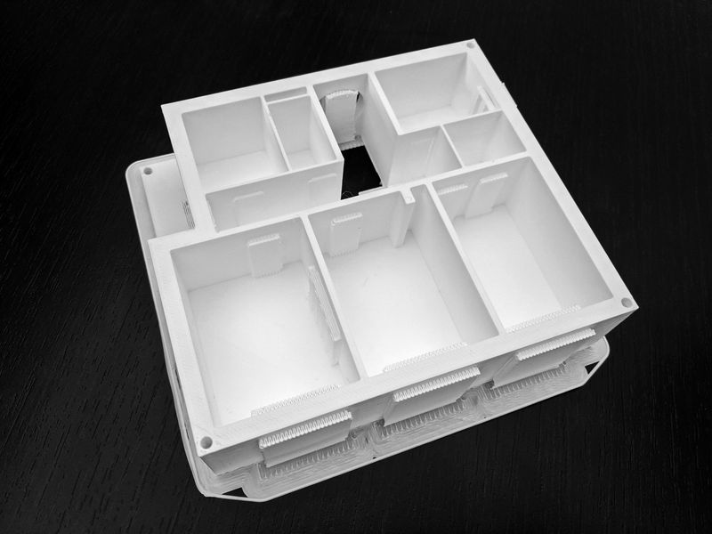
Na závěr přikládám stručný návod, jak tisknout s Průšou:
- Vytvoříme si 3D model ve SketchUp
- Exportujeme 3D model do STL formátu (ascii format, unit millimeters)
- Importujeme STL model do PrusaSlicer
- Opravíme STL, pokud se objeví varování (klik pravým tlačítkem myši na název modelu)
- Upravíme velikost (např. v poměru 1:100)
- Nastavíme míru detailu (např. 0.2 mm normal)
- Nastavíme filament (např. PLA)
- Zapneme supports (např. everywhere)
- Zapneme brim, abychom předešli warping problému
- Nastavíme infill (např. 25%)
- Provedeme slice a zkontrolujeme vrstvy
- Exportujeme G-code soubor
- Nahrajeme G-code soubor do tiskárny
- Pečlivě vyčistíme podložku, aby výtisk dobře přilnul
- Tiskneme
- Hotový výtisk opatrně sundáme za pomocí spreje s vodou a alkoholem (50:50) nebo dentální nití
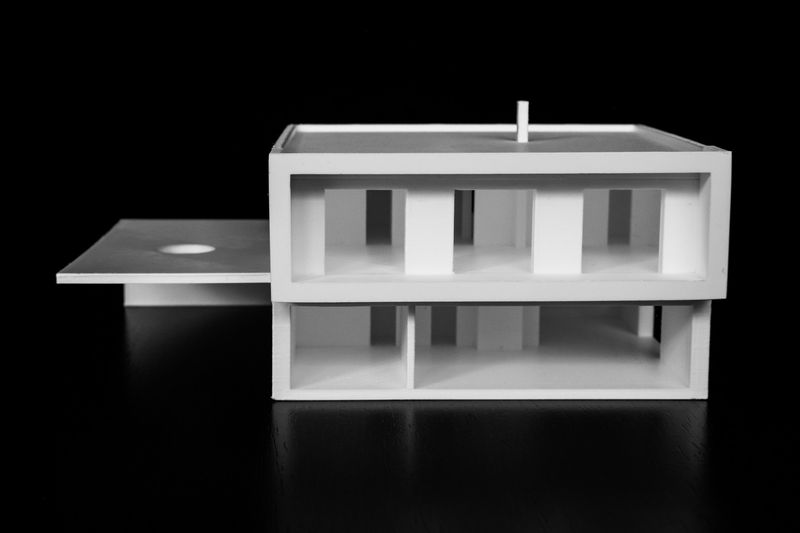
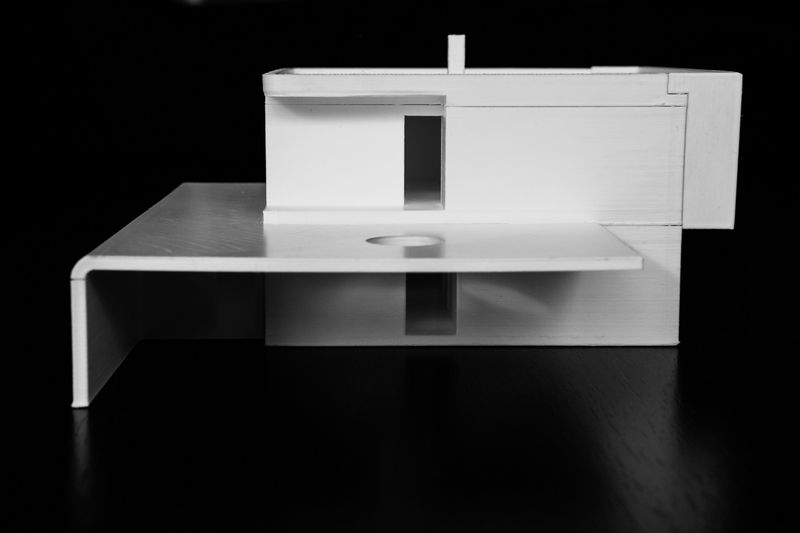
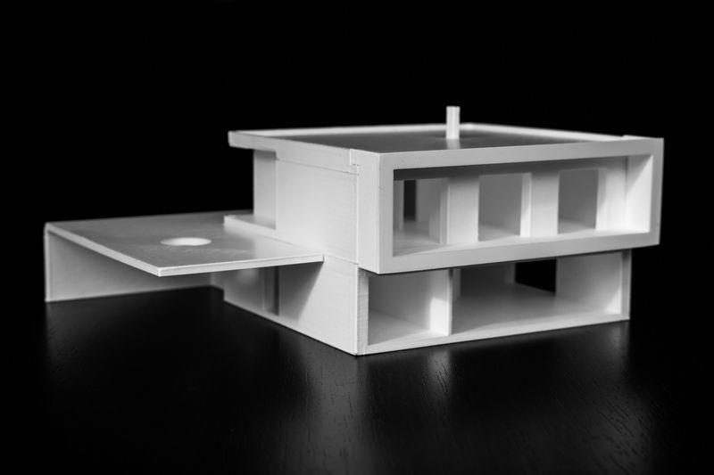
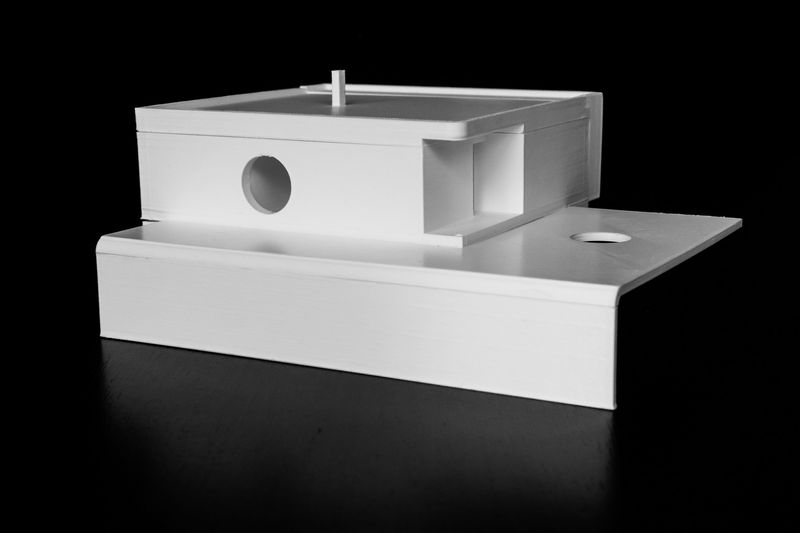
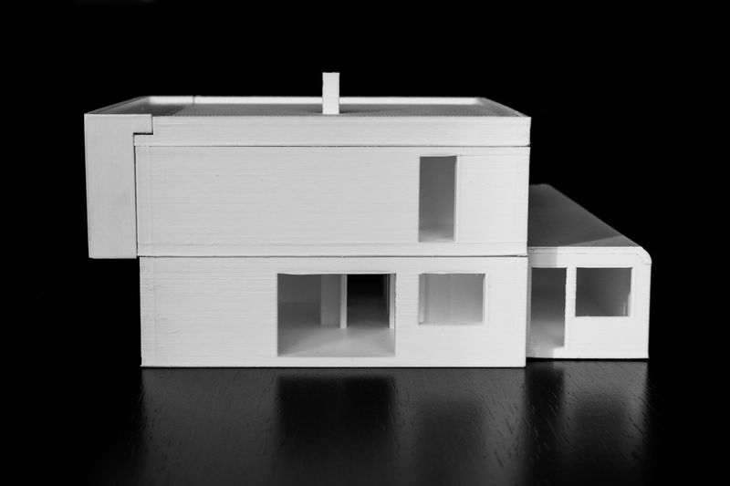
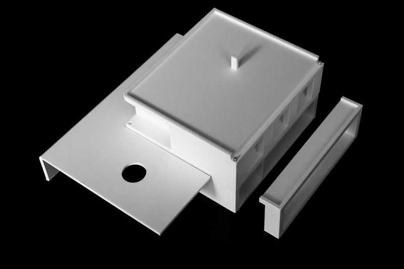
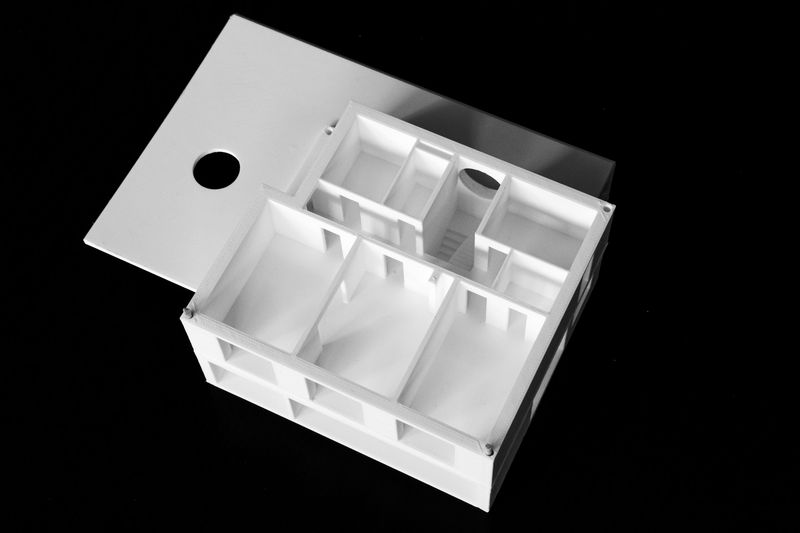
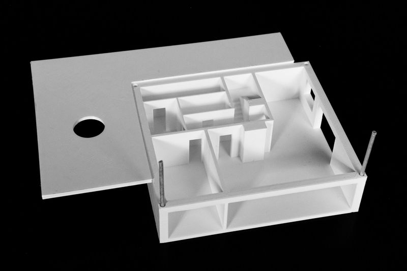
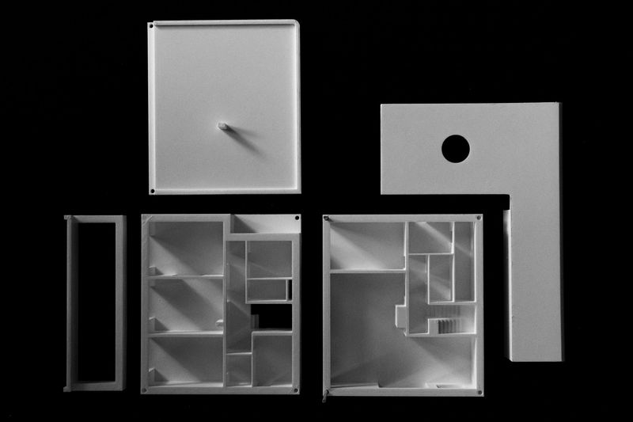